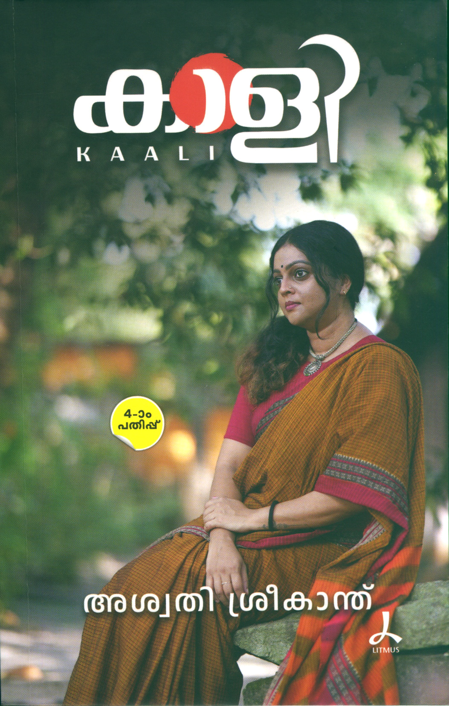

Author: അശ്വതി ശ്രീകാന്ത്
Review by: പ്രിയ രാധാകൃഷ്ണൻ
ഞാനിന്ന് വായിച്ചു തീർത്ത ഒരു കുഞ്ഞു പുസ്തകം...
അത്ര ചെറുതല്ലാത്ത ഒൻപതു കഥകൾ... എല്ലാം പെൺജീവിതത്തെക്കുറിച്ചുള്ളവ...
സകല സ്ത്രീഭാവങ്ങളെയും ഉൾക്കൊള്ളുന്ന, പ്രകൃതിയെ പോലും ജീവസ്സുറ്റ കഥാപാത്രങ്ങളാക്കിയ, വായിച്ചാൽ ഉള്ളിൽ പതിഞ്ഞു നിൽക്കുന്ന കഥാസന്ദർഭങ്ങൾ ഉൾകൊള്ളുന്ന മനോഹരമായ കഥകൾ. ടീവി അവതാരകയും അഭിനേത്രിയുമായ അശ്വതി എഴുത്തുകാരിയുമാണ് എന്ന് അഭിമുഖങ്ങളിൽ കേട്ടിട്ടുണ്ട് എന്നല്ലാതെ അവരുടെ രചനകളൊന്നും വായിച്ചിരുന്നില്ല. സത്യത്തിൽ പുസ്തകത്തിന്റെ പുറച്ചട്ടയിലെ അവരുടെ ഫോട്ടോ... മാധവിക്കുട്ടിയെ ഓർമിപ്പിക്കുന്ന ആ ഇരിപ്പും ഭാവവും വസ്ത്രം, ആഭരണം, മുടി തുടങ്ങിയവ ഇതൊക്കെയാണ് ബുക്ക് വാങ്ങാൻ പ്രേരിപ്പിച്ചത് തന്നെ... 😃 130 പേജുള്ള നല്ലൊരു പുസ്തകം...